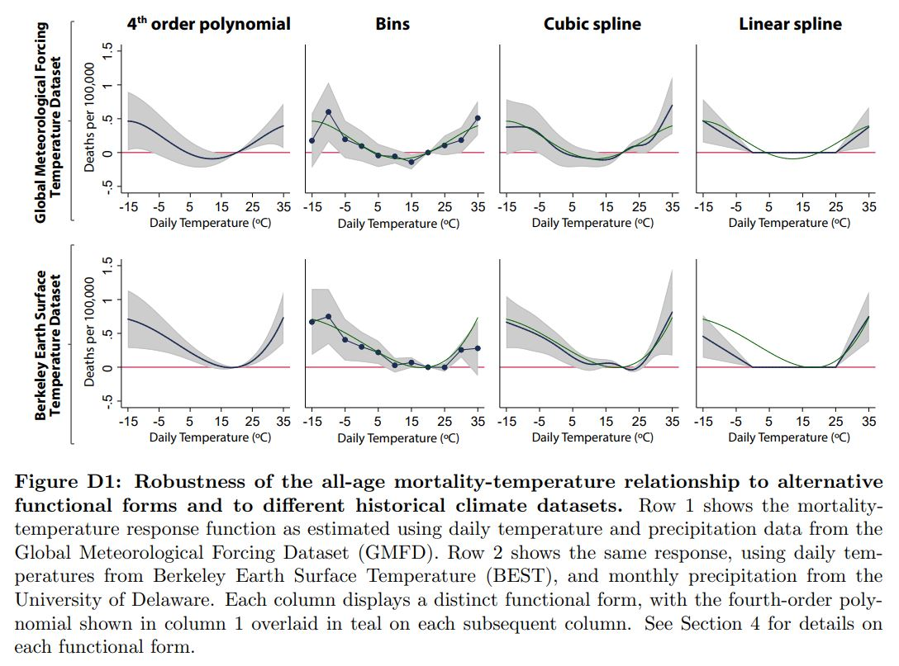

2. Developing a reduced-form specification
This section describes some of the considerations that go into developing a reduced-form specification using weather panel data. For an extensive review of the results available from the climate econometric literature and the empirical methods used to identify them, a good resource is Social and Economic Impacts of Climate.
2.1. Choosing weather variables
The choice of weather variables depends on the question we are trying to answer, and there are many forms to represent any given variable. For example, in the case of temperature, we can use $T_{avg}$, $T_{min}$, $T_{max}$, days above 30 C, heating and cooling degree-days, or growing degree-days. Morevoer, it is very important to first think about possible mechanism(s) behind a change witnessed in the environment, and then only make choices for variables that can explain that mechanism. A few of the important and frequently-used weather variables are listed below:
Temperature: There are various measures of temperature that can be used. Some of them are listed below:
- $T_{min}$, $T_{max}$: Many socioeconomic processes are more sensitive to extreme temperatures than to variation in the average. This is also useful when temperature variation is large, leading to significant differences in cold end and hot end response. These are important metrics when heterogeneity between each time unit matters, and may better capture heat waves and cold spells. Also, note that $T_{min}$ better reflects nighttime temperatures while $T_{max}$ better reflects daytime temperatures. Not all datasets include $T_{min}$ or $T_{max}$.
- $T_{avg}$: A good mean metric for seeing average response over the temperature support, when there is not much variation in temperature across time unit considered in the study. $T_{avg}$ is most appropriate when there is some natural inertia in the response, so that the dependent variable is responding to a kind of average over the last 24 hours. Note that $T_{avg}$ is often just $(T_{min} + T_{max}) / 2$, unless calculated from sub-daily data.
- HDD/CDD & GDD: Degree days (DD) are a measure of ’how much’ and for ’how long’ the outside air temperature was above or below a certain level.
- Heat Index & Wet Bulb Temperature: (see below on humidity)
Humidity: There are mainly three metrics for humidity measurements: absolute, relative (often "RH"), and specific. Absolute humidity describes the water content of air, expressed in grams per cubic metre or grams per kilogram. Relative humidity is expressed as a percentage relative to a maximum humidity value given the same temperature. Specific humidity is the ratio of water vapor mass to total moist air parcel mass. Human (and animal) bodies rely on evaporative cooling to regulate temperature in hot weather, the effectiveness of which depends on how much more moisture the atmosphere can currently hold (1 - RH). As a result, various temperature-humidity metrics have been developed to estimate "apparent" temperature, i.e. the temperature the current weather "feels like":
- Wet-Bulb Temperature (WBT): the temperature read by a thermometer covered in water-soaked cloth (wet-bulb thermometer) over which air is passed. Gives the lowest temperature that can be reached under current conditions by evaporative cooling only. Equals air temperature at 100% relative humidity, and is lower at lower humidity.
- Wet-Bulb Globe Temperature (WBGT): a weighted index that combines WBT with measures of the impact of direct radiative transfer (e.g. sunlight)
- Heat Index (HI): various calculated metrics combining shade temperature and relative humidity
Precipitation: highly local (in space and time), non-normal (especially compared to temperature), poorly measured, and poorly predicted (see Section 1.5). Precipitation is often used as a control since it is correlated with temperature. However, the strength and direction of this correlation varies significantly by region and time of year (see e.g. Trenberth et al. 2005, with implications for collinearity). Furthermore, the same care should be taken when inserting precipitation into a model as any other weather or social variable - what is its expected role? In what form should the data be? etc. Precipitation affects society differently at different spatiotemporal scales - annual precipitation may be useful for studying snowpack trends, drinking water supply, or the effect of droughts on agriculture; maximum precipitation rates may be the relevant metric for flood damages or crop failures. Remember that though means and extremes may be correlated, it's still possible to have a record storm in an unnaturally dry year, or an unnaturally wet year without heavy precipitation. As a result, different metrics of precipitation are often used (incomplete list):
- Total precipitation (e.g., over a year): May be useful for large-scale impacts such as snowpack trends. Often used as a control in responses to extreme weather, despite being unsuited to studying short-term phenomena.
- Soil water, potential evapotranspiration rate (PET), Palmer drought severity index (PDSI), and water runoff/availability: often used to capture water stress.
- Number of of rainy/dry days, or moments of the precipitation distribution: the distribution of precipitation often matters more than total. Some datasets (such as HadEX2) specialize in extremes data.
River discharge rate: River flows are generally measured at the station-level. While runoff is avaialble in gridded products, it is not a good reflection of water availability. Hydrological models (like VIC) can translate precipitation into river discharges across a region.
Wind speed: The process of interest determines how wind speeds should be measured. For example, normal speeds are important for agriculture, squared speeds for distructive force, and cubic speeds for wind turbine power. Also consider gust velocity, which is generally available. Maximum wind speed over some time period has been used as well.
Net primary productivity (NPP): It is the difference of amount of carbon dioxide that vegetation takes in during photosynthesis and the amount of carbon dioxide released during respiration. The data come from MODIS on NASA’s Terra satellite. Values range from near 0 g of carbon/area/day (tan) to 6.5 g of carbon/area/day (dark green). A negative value means decomposition or respiration overpowered carbon absorption; more carbon was released to the atmosphere than the plants took in.
Evapotranspiration rate (ET): It is the sum of evaporation and plant transpiration from the Earth's land and ocean surface to the atmosphere. Changes in ET is estimated using water stress measure in plants, thereby relating to the agricultural productivity measurement.
Solar radiation: Shortwave radiation (visible light) contains a lot of energy; longwave radiation (infrared light) contains less energy than shortwave radiation. The sun emits shortwave radiation because it is extremely hot, while the Earth re-emits heat it receives as longwave radiation in the form of infrared rays. Exposure of shortwave radiation is said to cause skin cancer, eye damage, etc. However, UV (shortwave) radiation is important for regulating vitamin D circulation in our body.
Sea surface temperature (SST) and ocean temperature: SST is the water temperature close to the ocean's surface, while ocean temperature is related to ocean heat content, an important topic in the study of global warming. Weather satellites have been available to determine SST information since 1967. NASA and Moderate Resolution Imaging Spectroradiometer (MODIS) SST satellites have been providing global SST data since 2000, available with a day lag. Though SST has a large impact on global weather patterns, other metrics (such as El Niño indices - ENSO3.4, etc. - or various other oscillation indices) may be more useful in understanding its impact.
2.2. Common functional forms (pros, cons, and methods)
Different functional forms serve different purposes. First, think about the "true model" that relates your dependent variable to your weather variables, and then try to turn it into a linear expression that you can estimate. Some of the frequently used functional forms along with a good reference for understanding them in detail are listed below.
For understanding the methods part we are using transformation-before-aggregation method, which is explained in section 2.4 below.
Consider a grid $\theta$ located in county $i$ with $T_{\theta it}$ as its temperature at time $t$. We want to generate an aggregate temperature transformation, $f(T_{it}^k)$, for county $i$ at time $t$, after aggregating over the grids $\theta \in \Theta$, where $\Theta$ denotes the set of grids that are located inside county $i$. Here, $k\in\{1,2,...,K\}$ denotes the $k^{th}$ term of transformation. For example, in case of $K$-degree polynomial transformation, it will be $K$ polynomial terms, and in case of $K$-bins transformation, it will be $K$ temperature bins. So, we can write:
$$f(T_{it}^k)=g(T_{\theta it})$$
where, $g(.)$ denotes the transformation mapping on the grid-level temperature data.
Once we have $f(T_{it}^k)$ for each $k\in\{1,2,...,K\}$, we can use them to generate the full nonlinear transformation $F(T_{it})$, associating $\beta^k$ parameter with $k^{th}$ term of transformation. We have:
$$F(T_{it})=\sum_{k\in \{1,2,...,K\}} \beta^k*f(T_{it}^k)$$
-
- Assignment of observations to bins. e.g. 15C-20C, 20C-25C, ... for temperature
- Uses the mean metric, so its advantage is non-parametric nature
Highly susceptible to existence of outliers in data
Consider doing a 6-bins bin transformation of temperature variable. Let us take equal sized bins for simplicity, but in actual binning procedure, we might want to have smaller sized bins around the temperature values where we expect most of the response to occur. For now, the $K=6$ temp bins are: $<-5^\circ C$, $-5^\circ C-5^\circ C$, $5^\circ C-15^\circ C$, $15^\circ C-25^\circ C$, $25^\circ C-35^\circ C$ and $>35^\circ C$.
As defined earlier, the grid $\theta$ temperature is $T_{\theta i t}$. For transformation, we will have to map actual temperature observations to the respective bins that we have defined above. Then, take the weighted average of these terms across all the grids that come under a specific county. The mapping is defined as follows:
$$f(T_{it}^k)=\sum_{\theta \in \Theta} \psi_{\theta} \sum \mathbf{1} \left \{ {T_{\theta i t} \in k} \right \}$$ $$\forall k \in \{1,2,...,6\}$$
where $\psi_{\theta}$ is the weight assigned to the $\theta$ grid.The aggregate transformation is as below:
$$F(T_{it})=\sum_{k\in \{1,2,...,6\}} \beta^k*f(T_{it}^k)$$
-
- Fitting an n-degree polynomial function for weather variables
- More poly degrees provide better data fitting
Smooth curve nature doesn’t highlight important irregularities in data
Consider doing a 4-degree polynomial transformation of temperature variable. We need to first generate the remaining polynomial terms, namely $T_{\theta i t}^2$, $T_{\theta i t}^3$ and $T_{\theta i t}^4$, by raising original $T_{\theta i t}$ to powers 2, 3 and 4 respectively. Then, take the weighted average of these terms across all the grids that come under a county. So, we have:
$$f(T_{it}^k)=\sum_{\theta \in \Theta} \psi_{\theta}*T_{\theta i t}^k$$ $$\forall k \in \{1,2,3,4\}$$
where $\psi_{\theta}$ is the weight assigned to the $\theta$ grid.The aggregate transformation is as below:
$$F(T_{it})=\sum_{k\in \{1,2,3,4\}} \beta^k*f(T_{it}^k)$$
-
- Fitting a piecewise polynomial function between pre-specified knots
- More independence compared to poly in choosing function knots
Highly parametric due to freedom of choice of knots
For transforming the temperature data into restricted cubic splines, we need to fix the location and the number of knots. The reference above on cubic splines can be helpful in deciding the knot specifications. As before let the grid $\theta$ temperature be $T_{\theta i t}$. Let us do this exercise for $n$ knots, placed at $t_1<t_2<...<t_n$, then for $T_{\theta i t}$, which is a continuous variable, we have a set of $(n-2)$ new variables. We have:
$$f(T_{i t}^k)= \sum_{\theta \in \Theta} \psi_{\theta}*\{(T_{\theta i t}-t_k)^3_+ - (T_{\theta i t} - t_{n- 1})^3_+*\frac{t_n-t_k}{t_n-t_{n-1}}+(T_{\theta i t} - t_{n})^3_+*\frac{t_{n-1}-t_k}{t_{n}-t_{n-1}}\}$$ $$\forall k \in \{1,2,...,n-2\}$$ where, $\psi_{\theta}$ is the weight assigned to the $\theta$ grid.And, each spline term in the parentheses $(\nabla)^3_+$ e.g. $(T_{\theta i t} - t_{n-1})^3_+$ is called a truncated polynomial of degree 3, which is defined as follows:
$\nabla^3_+=\nabla^3_+$ if $\nabla^3_+>0$
$\nabla^3_+=0$ if $\nabla^3_+<0$The aggregate transformation is as below:
$$F(T_{it})=\sum_{k\in \{1,2,...,n-2\}} \beta^k*f(T_{it}^k)$$
-
- Fitting a line between cutoff values e.g. 25C CDD/0C HDD for temp
- Less parametric and very useful for predicting mid-range response
Linear and highly sensitive to choice of cutoff values
Linear spline is a special kind of spline function, which has two knots, and the segment between these two knots is a linear function. It is also called ‘restricted’ linear spline, since the segments outside the knots are also linear. To implement this, we first decide location of the two knots, say $t_1<t_2$. Then, closely following the cubic spline method, we get:
$$f(T_{it}^1)=\sum_{\theta \in \Theta} \psi_{\theta}*(T_{\theta i t}-t_2)_+$$
$$f(T_{it}^2)=-\sum_{\theta \in \Theta} \psi_{\theta}*(T_{\theta i t}-t_1)_+$$
where, $\psi_{\theta}$ is the weight assigned to the $\theta$ grid.And, each spline term in the parentheses $(\nabla)_+$ e.g. $(T_{\theta i t} - t_2)_+$ is called a truncated polynomial of degree 1, which is defined as follows:
$\nabla_+=\nabla_+$ if $\nabla_+>0$
$\nabla_+=0$ if $\nabla_+<0$The aggregate transformation is as below:
$$F(T_{it})=\sum_{k\in \{1,2\}} \beta^k*f(T_{it}^k)$$
We generally try to work with many functional forms in a paper because it serves dual purpose of being a sanity check for researchers' codes, and a robustness check for readers' confirmation. However, we need to take decision on the main specification that we want in the paper. To do this, we formally rely on tests such as cross-validation (explained below), but we can also eyeball at the fit of different functional forms by printing overlaid graphs in a way that is suitable for the exercise. An example is shown in the figure below:
Example of reduced-form regression plots for different functional forms  Source: Carleton et al. (2019).
2.3. Cross-validation
Cross-validation can be done to check the internal validity and the external validity of the model estimates. For checking internal validity, the model can be fit to a subset of the dataset, and evaluated on the remainder. For example, you can leave particular regions out of your regression or remove a random 1/k of your data (k-fold cross validation) instead of running a full-sample regression. For gauging external validity, model is run on some new dataset that has not been not used in the model-evaluation process. For example, by predicting the response for a new country using global regression model estimates, and comparing it to the actual observations.
Although cross-validation is not universally performed by researchers, and many people continue to rely on the measure of R-squared statistic. However, we know from our basic statistics learning, how badly R-squared statistic can perform even in very simple cases. Therefore, cross-validation can be an effective approach for doing model-selection.
Some examples on the use of cross-validation exercise include deciding on degree of polynomial, cutoff knots' positions for splines, etc. To do a k-fold cross validation exercise for deciding on polynomial degree, we run our test specifications (say polynomials of degree 2, 3, 4 and 5) on $k$ subsets of data, and see the curve fit for each specification on all the $k$ subsets of data. To fix a metric for making this decision, we can rely on root-mean-square-error (RMSE) statistic. So, the specification with the lowest RMSE will be the most preferred specification here. Having said that, we usually employ combination of techniques, like eye-balling and RMSE, to take decision on most preferred specification.
2.4. Dealing with the spatial and temporal scales of economic processes
Weather data products are generally available in gridded form, developed through careful interpolation and/or reanalysis. The grids used can vary in size across datasets, but they can be aggregated to administrative units like county, city, etc., using appropriate weighted aggregation methods. Think about the scale of your administrative units, relative to the scale of the grid cells. If the regions are much bigger than the grid cells, a weighted average across included cells is appropriate. If the regions are much smaller than the cells, it will probably be necessary to aggregate the regions, since the level of variation is only at the grid cell level. If the two are of similar sizes, it is generally necessary to account for the amount that each grid cell lies within each region. This can be calculated as a transformation matrix, with a row for each region and a column for each cell. Once the matrix is calculated, it can be reused for each time step.
Typically, preparing the weather variables requires some kind of non-linear transformation. For example, estimating a polynomial functional form requires raising the temperatures to various powers. The square of a weighted average of grid-level temperatures is not the same as the weighted average of the square of grid-level temperatures.
While doing the spatial aggregation, we need to decide whether we want to transform the data first and then aggregate it (transformation-before-aggregation) or aggregate it and then transform it (aggregation-before-transformation). This decision is based on the whether the phenomenon in consideration is occurring at the local (grid) scale or at the larger administrative units (country, state, county, etc.) scale. Also, it matters what variable is in consideration. For example, doing aggregation-before-transformation for temperature will distort the signal less that doing it for precipitation. This is because precipitation is highly local both temporally and spatially; it could rain for <1 min in <1 km radius area. Let us try to understand these two methods using counties as our higher administrative level:
Transformation-before-aggregation
When an economic process is occurring at the grid level (for example, for individuals or households), we need to first do our estimation at the grid level. For example, to estimate the effect of temperature on human mortality at the county level, we should reckon that the effect of temperature on mortality is a local phenomenon, so the estimation should happen at the lowest possible level. Here, we need to do the required transformation of our weather variables at the grid level, then aggregate these values using a weighted averaging method, and feed these into our estimation procedure.
Mathematical formulation for transformation-before-aggregation method
We want to understand how local agents respond to weather shocks. Suppose that there exists an agent-level dose-response curve, $y_{js} = f(T_{ps})$, for a socioeconomic outcome for agent $j$, where the temperature affecting agents is in grid cell $p$ and occurs in timestep $s$ (e.g., if the agents respond on a day-by-day basis, $T_{ps}$ is the local weather for a single day).
However, we do not observe agent-level responses. Instead, we have region-wide sums, $y_{it}$ for region $i$ and reporting period $t$. For example, if $y_{js}$ is death risk for agent $j$ for a given day, we may only observe total deaths across a region in each year, $$y_{it} = \sum_{s \in t} \sum_{j \in i} y_{js}.$$
We can determine the agent-level response $f(T_{ps})$ if we assume linearity. First, let us represent this the way we would if we could run a regression with agent-level data, breaking up the dose-response
curve into a sum of terms:
$$f(T_{ps}) = \beta_1 g_1(T_{ps}) + \beta_2 g_2(T_{ps}) + \cdots + \beta_k g_k(T_{ps})$$
where $g_k(T_{ps})$ is a transformation of the weather variables. For example, for a cubic response curve, $g_1(T_{ps}) = T_{ps}$, $g_2(T_{ps}) = T_{ps}^2$, and $g_3(T_{ps}) = T_{ps}^3$.
We know that
$$y_{it} = \sum_{s\in t} \sum_{j\in i} y_{js} = \sum_{s\in t} \sum_{j\in i}$$
$$\beta_1 g_1(T_{ps}) + \beta_2 g_2(T_{ps}) + \cdots + \beta_k g_k(T_{ps})$$
We can rearrange this to
$$y_{it} = \beta_1 (\sum_{s\in t} \sum_{j\in i} g_1(T_{ps})) + $$
$$\beta_2 (\sum_{s\in t} \sum_{j\in i} g_2(T_{ps})) + \cdots + $$
$$\beta_k (\sum_{s\in t} \sum_{j\in i} g_k(T_{ps}))$$
Or, more simply, $$y_i = \beta_1 N_{it} g_1(T_{ps}) + \beta_2 N_{it} g_2(T_{ps}) + \cdots + \beta_k N_{it} g_k(T_{ps})$$
where $N_{it}$ is the number of agent-timestep observations represented within region $i$ and reporting period $t$.
Aggregation-before-transformation
When an economic process is occurring at the county level, we need to first do the weather variable aggregation at the county level. We do the weather variable transformation after we have aggregated it to the county level using weighted averaging method, and then run our estimation on the county level data. For example, to estimate the effect of storm events on public service employment at the administrative block level, we need to take into account the fact that hiring/firing of public service employees happens at the block level only. Estimating grid-level effects will lead to wrong estimation, as it would result in zero estimate for those (almost all) grid cells which do not have the block office coordinates, and extremely large values for those (very few) cells, which comprise of the block office coordinates. The mathematical formulation for aggregation-before-transformation can be learned through transformation-before-aggregation formulation described above, with a change that the aggregation step precedes the transformation step. Weather data products can have temporal resolution finer than scale of daily observations. Like spatial aggregation, we can do temporal aggregation to month, year, or decade; however, unlike spatial aggregation, the averaging process is standard in all general cases.